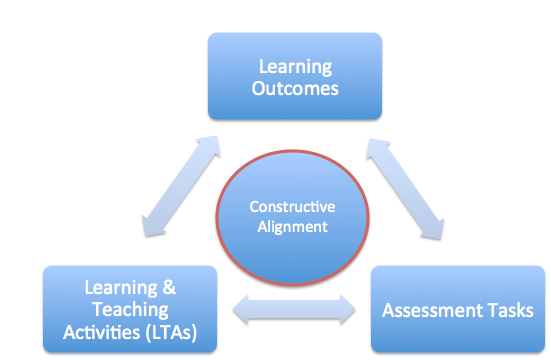

What is constructive alignment?
Constructive alignment has two aspects. The ‘constructive’ aspect refers to what the learner does, which is to construct meaning through relevant learning activities. The ‘alignment’ aspect refers to what the teacher does, which is to set up a learning environment that supports the learning activities appropriate to achieving the desired learning outcomes. The key is that the components in the teaching system, especially the teaching methods used and the assessment tasks are aligned to the learning activities assumed in the intended outcomes . . . The learner is in a sense ‘trapped’, and finds it difficult to escape without learning what is intended should be learned.”
Biggs (2003)

Although it may appear obvious that module aims, learning outcomes, learning activities and assessments are all related or aligned, the reality is that often there is a mismatch. This can happen for many reasons, including:
- Learning outcomes, actual learning activities and assessments undertaken by students are developed at different times and sometimes by different people.
- Changes to one stage not being thought through in relation to the other stages.
- Assessments not designed to align with what learning outcomes are asking for.
- Insufficient or no TLAs (teaching & learning activities) to support student learning of key knowledge/skills. As a result students are not prepared to undertake the assessments.
Successful alignment of module aims, learning outcomes, TLAs and assessments are fundamental to ensuring a consistent and successful student experience.
Alignment of learning outcomes, TLAs and assessment are also critical in terms of how you as the teacher can effectively deliver a successful student learning experience.
If the design of the module is not aligned then it almost certain that the students will not have a successful learning experience and this may be apparent through negative feedback in module evaluation. If you are new to teaching, teaching in a new area or to a new student audience this can undermine your confidence. Before you reflect on how to enhance your own practice it can be useful to review the design of a module in terms of it being constructively aligned. Some simple changes and realignment could have a significant impact on the overall student experience, and reassure you that it might not be your teaching approach that is the issue.
Making changes to learning outcomes or assessments may require approval by your Programme Board. The Quality Assurance and Enhancement Handbook gives guidance on the requirements when making minor and/or major changes to module design.
How to constructively align your module
So, how do you know if your module is constructively aligned?
Step 1: Learning outcomes and Assessment Tasks
Look at your module learning outcomes. Is the active verb being assessed?
You need to make sure that the active verb in your learning outcome is actually what will be assessed. Doing this should ensure that the assessment task will ask students to demonstrate the expected knowledge and/or skills necessary to achieve one or more of the set module learning outcomes.
NB You may find it useful to refer to our Writing Learning Outcomes activity to help you review your learning outcomes.
Step 2: Learning & Teaching Activities and Assessment Tasks
Thinking about the learning and teaching activities (LTAs) you have planned for the module, are they designed to support students to meet the assessment tasks?
For example, if an assignment task asks students to make a presentation and when you look at the the TLAs for the module there are activities which focus on developing effective presentation skills, then the module is aligned. If, on the other hand, there aren’t any activities that support developing presentation skills, then the module is not aligned.
NB You can use our Quick Planning Templateto help to help you (re) design your LTAs.
Step 3: Assessment Tasks
When deciding on the number (and type) of assessments, your learning outcomes should act as the basis of how many skills or knowledge areas should be demonstrated in each assessment task.
Look at your module assessment tasks. Are they actually aligned to different skills and/or knowledge presentation?
If two assessments are measuring the same knowledge/skills/learning outcomes, you need to consider if they are distinct tasks. Perhaps they are actually a staged assessment; or are both assessments tasks really necessary?
Constructive Alignment Activity
Our constructive alignment activity provides a guide to support individuals and/or module teams to constructively align modules.
You can undertake this activity by yourself for your own reflection, however we would recommend that it be used as a group activity with module teams.
Suggested Time: 30 – 60 minutes.
What you will need:
- Copy (ies) of your current module descriptor.
- Copy (ies) of our Constructive Alignment matrix.
- Learning Activities Quick Planning Guide (optional)
- Writing Learning Outcomes Activity (optional).
Find out more